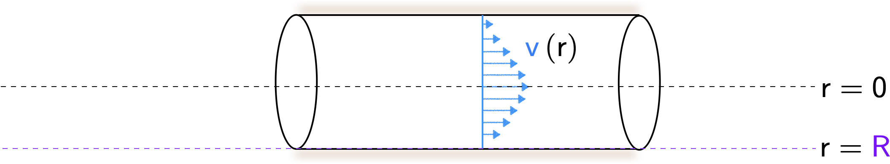
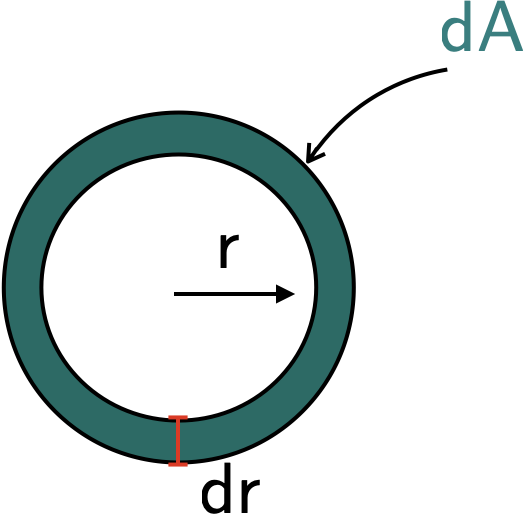
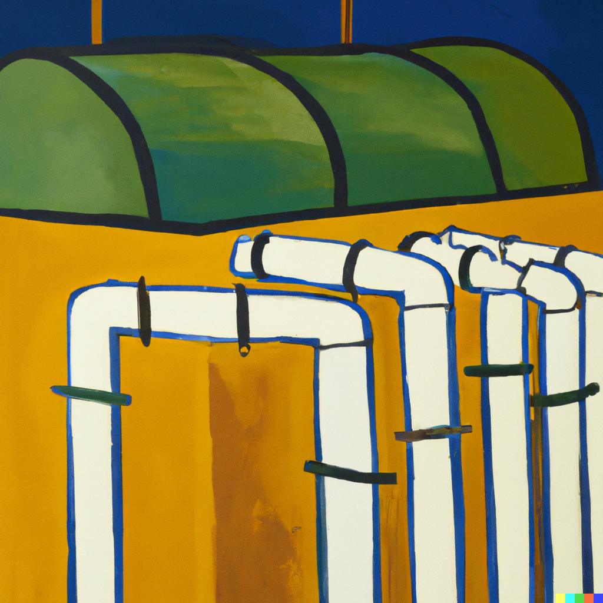
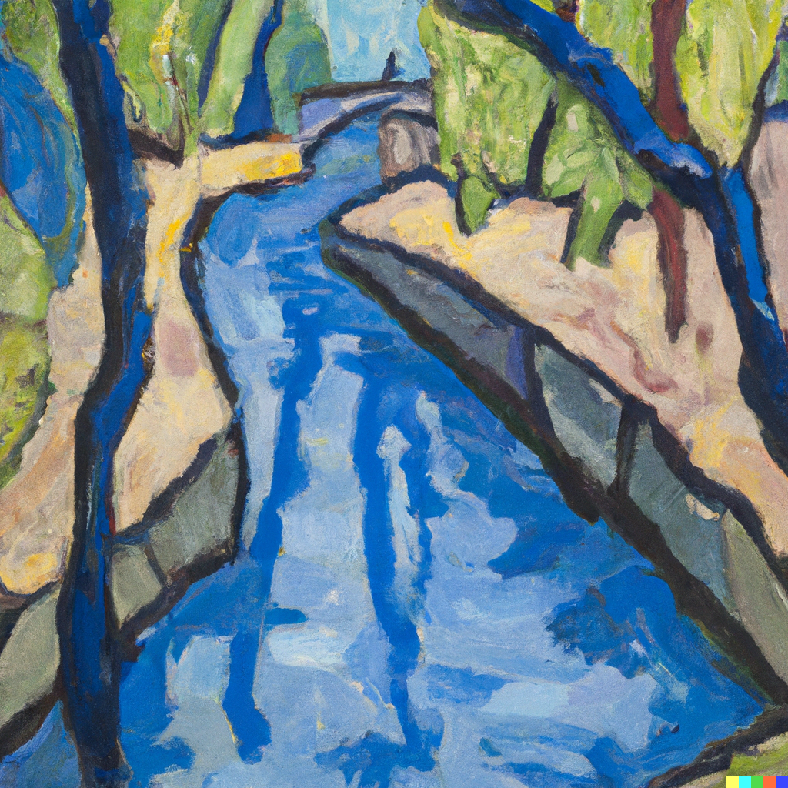
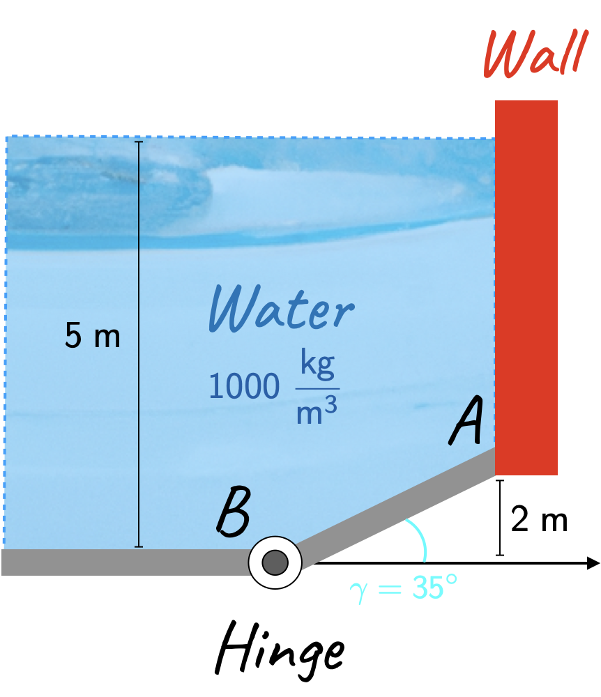
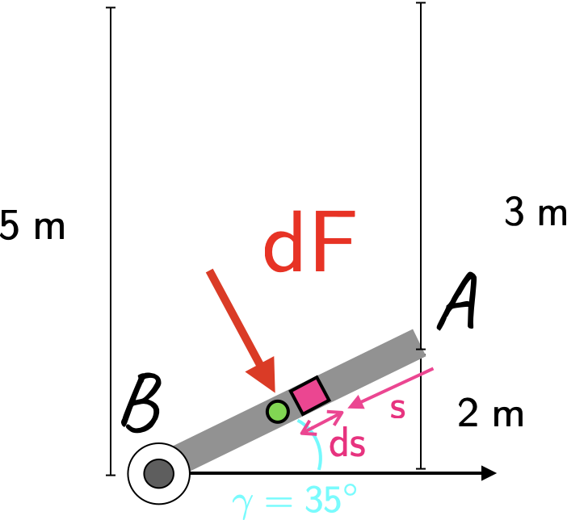

Code
import numpy as np
V_o = 10
rho = 1000
R = 1
m_dot = 0.5 * np.pi * rho * V_o * R**2
print(str(m_dot)+' kg/s')15707.963267948964 kg/sFor reasons that will become later once we study viscosity and pressure losses, flows through pipes generally have a parabolic profile, i.e.,
\[ \large \require{color}{\color[rgb]{0.059472,0.501943,0.998465}v} \left( r \right) = V_o \left( 1 - \left( \frac{r}{{\color[rgb]{0.501967,0.001556,0.998511}R}} \right)^2 \right). \]
Given this profile, please calculate the massflow rate through a pipe where the radius \(\require{color}{\color[rgb]{0.501967,0.001556,0.998511}R} = 1 \; m\), and the density of the fluid in the pipe is \(\require{color}{\color[rgb]{0.964810,0.470942,0.057578}\rho} = \require{color}{\color[rgb]{0.964810,0.470942,0.057578}1000 kg / m^3}\), and the constant \(V_o = 10\).

To answer this question, it will be useful to consider a ring-shaped element for the area; see the diagram below.

The massflow rate is given by
\[ \large \require{color}\dot{m} = \int_{{\color[rgb]{0.064095,0.501831,0.501977}A}} {\color[rgb]{0.990448,0.502245,0.032881}\rho} {\color[rgb]{0.059472,0.501943,0.998465}v} {\color[rgb]{0.064095,0.501831,0.501977}dA} \]
From the diagram above, we can use the following statement
\[ \large \require{color}{\color[rgb]{0.064095,0.501831,0.501977}dA} = 2 \pi r dr. \]
This can then be substituted back into the equation for the massflow rate to yield
\[ \large \require{color}\dot{m} = \int_{0}^{{\color[rgb]{0.501967,0.001556,0.998511}R}} {\color[rgb]{0.990448,0.502245,0.032881}\rho} {\color[rgb]{0.059472,0.501943,0.998465}v}\left(r \right) 2 \pi r dr \]
Integrating this out yields
\[ \large \require{color}\dot{m} = \int_{0}^{{\color[rgb]{0.501967,0.001556,0.998511}R}} {\color[rgb]{0.990448,0.502245,0.032881}\rho} V_o \left( 1 - \left( \frac{r}{{\color[rgb]{0.501967,0.001556,0.998511}R}} \right)^2 \right) 2 \pi r dr \]
\[ \large \require{color}\dot{m} = 2 \pi {\color[rgb]{0.990448,0.502245,0.032881}\rho} V_o \int_{0}^{{\color[rgb]{0.501967,0.001556,0.998511}R}} \left( 1 - \left( \frac{r}{{\color[rgb]{0.501967,0.001556,0.998511}R}} \right)^2 \right) r dr \]
\[ \large \require{color}\dot{m} = 2 \pi {\color[rgb]{0.990448,0.502245,0.032881}\rho} V_o \int_{0}^{{\color[rgb]{0.501967,0.001556,0.998511}R}} \left( r - \frac{r^3}{{\color[rgb]{0.501967,0.001556,0.998511}R^2}} \right) dr \]
\[ \large \require{color}\dot{m} = 2 \pi {\color[rgb]{0.990448,0.502245,0.032881}\rho} V_o \left[ \frac{{\color[rgb]{0.501967,0.001556,0.998511}R^2}}{2} - \frac{1}{{\color[rgb]{0.501967,0.001556,0.998511}R^2}}\frac{{\color[rgb]{0.501967,0.001556,0.998511}R^4}}{4} \right] \]
\[ \large \require{color}\dot{m} = \pi {\color[rgb]{0.990448,0.502245,0.032881}\rho} V_o \frac{{\color[rgb]{0.501967,0.001556,0.998511}R^2}}{2} \]
We can now plug in values to work out this value, i.e.,
A water tank receives a continuous flow rate of \(0.2 kg/s\) and delivers \(0.1 kg/s\) to an outlet. What is the rate at which the tank water mass grows? If the initial water mass is \(100 kg\) when will it have \(1000 kg\)?

Clearly as the inflow is greater than the outflow (and because the problem does not mention steady conditions), we can think of this as a quasi-steady problem.
We have the following equations:
\[ \large \require{color}\frac{\Delta m}{\Delta t} = {\color[rgb]{0.985542,0.009453,0.999181}\dot{m}_{out}} - {\color[rgb]{0.065909,0.501809,0.006823}\dot{m}_{in}} = {\color[rgb]{0.985542,0.009453,0.999181}0.1 kg/s }- {\color[rgb]{0.065909,0.501809,0.006823}0.2 kg /s} = -0.1 kg /s \]
Let the time taken be \(\delta t\), then we have
\[ \large \require{color}{\color[rgb]{0.990448,0.502245,0.032881}m_{init}} + \frac{\Delta m}{ \Delta t} = {\color[rgb]{0.501967,0.001556,0.998511}m_{final}} \]
\[ \large \require{color}\Rightarrow{\color[rgb]{0.990448,0.502245,0.032881}100 kg }+ \left|0.1 kg/s\right| \delta t = {\color[rgb]{0.501967,0.001556,0.998511}1000 kg } \]
which implies that \(\delta t = 9000 s\).Water with a density of \(\require{color}{\color[rgb]{0.990448,0.502245,0.032881}1000 \frac{kg}{m^3}}\) flows through a channel of rectangular cross section of \(\require{color}{\color[rgb]{0.064095,0.501831,0.501977}1 m}\) by \(\require{color}{\color[rgb]{0.064095,0.501831,0.501977}2 m}\) at a volumetric flow rate of \(\require{color}{\color[rgb]{0.501961,0.250953,0.010028}5400 \; m^3/hr}\). Determine the velocity in \(m/s\) & the mass flow rate in \(kg/s\).

We can convert the volumetric flow rate into standard SI units
\[ \large \require{color}{\color[rgb]{0.501961,0.250953,0.010028}Q} = {\color[rgb]{0.501961,0.250953,0.010028}5400} \; {\color[rgb]{0.501963,0.000000,0.008128}\frac{m^3}{hr}} \times \frac{1}{3600}\frac{hr}{s} ={\color[rgb]{0.501963,0.000000,0.008128} 1.5} \; {\color[rgb]{0.501963,0.000000,0.008128}\frac{m^3}{s}}. \]
We can now work out the velocity, i.e.,
\[ \large \require{color}{\color[rgb]{0.501961,0.250953,0.010028}Q} = {\color[rgb]{0.064095,0.501831,0.501977}A}{\color[rgb]{0.059472,0.501943,0.998465}v} \]
\[ \large \Rightarrow\require{color}{\color[rgb]{0.059472,0.501943,0.998465}v} = \frac{{\color[rgb]{0.501961,0.250953,0.010028}1.5 \frac{m^3}{s} }}{{\color[rgb]{0.064095,0.501831,0.501977}1 m \times 2 m}} = {\color[rgb]{0.059472,0.501943,0.998465}0.75 \; \frac{m}{s}} \]
From this velocity, we can now work out the massflow rate
\[ \large \require{color}\dot{m} = {\color[rgb]{0.501963,0.000000,0.008128}Q }{\color[rgb]{0.990448,0.502245,0.032881}\rho} = {\color[rgb]{0.501963,0.000000,0.008128}1.5 \; \frac{m^3}{s} }\times {\color[rgb]{0.990448,0.502245,0.032881}1000 \frac{kg}{m^3}} = 1500 \frac{kg}{s} \]This last problem does not pertain to conservation of mass, but rather to the idea of a center of pressure. Consider a 2D representation of a water reservoir with a gate (hinge) at the base. Assuming the gate below is \(1.5 \; m\) wide, compute:

Following on from the free body diagram in Lecture 3, we have the diagram below.

To obtain the force on the gate due to the water pressure, we have to integrate:
\[ \large \require{color}{\color[rgb]{0.986252,0.007236,0.027423}F} = \int_{A}^{B} {\color[rgb]{0.990448,0.502245,0.032881}\rho} g w \; h\left( {\color[rgb]{0.986048,0.008333,0.501924}s} \right) ds = \int_{A}^{B} {\color[rgb]{0.990448,0.502245,0.032881}\rho} g w \left(3 + {\color[rgb]{0.986048,0.008333,0.501924}s}\; sin\left( {\color[rgb]{0.127700,0.999775,0.999047}\gamma} \right) \right) {\color[rgb]{0.986048,0.008333,0.501924}ds} \]
\[ \large \require{color}{\color[rgb]{0.986252,0.007236,0.027423}F} = \int_{A=0}^{B=\frac{2}{sin\left( {\color[rgb]{0.127700,0.999775,0.999047}\gamma} \right) }} {\color[rgb]{0.990448,0.502245,0.032881}\rho} g w \left(3 + {\color[rgb]{0.986048,0.008333,0.501924}s}\; sin\left( {\color[rgb]{0.127700,0.999775,0.999047}\gamma} \right) \right) {\color[rgb]{0.986048,0.008333,0.501924}ds} \]
\[ \large \require{color}{\color[rgb]{0.986252,0.007236,0.027423}F} = \left[ {\color[rgb]{0.990448,0.502245,0.032881}\rho }g w 3 {\color[rgb]{0.986048,0.008333,0.501924}s} + {\color[rgb]{0.990448,0.502245,0.032881}\rho }g w \frac{{\color[rgb]{0.986048,0.008333,0.501924}s}^2 sin\left( {\color[rgb]{0.127700,0.999775,0.999047}\gamma} \right) }{2} \right]_{0}^{\frac{2}{sin\left( {\color[rgb]{0.127700,0.999775,0.999047}\gamma} \right)}} \]
See the code below for the numerical solution. Note that it makes use of thelambda function, which makes it easy to define a function.
205.23855678051567kNTo work out the horizontal force exerted by the wall at point B, we need to find the center of pressure. As detailed in lecture, this is given by
\[ \large \require{color}{\color[rgb]{0.986252,0.007236,0.027423}F} \times {\color[rgb]{0.986048,0.008333,0.501924}s_{cp}} = \int_{A}^{B} {\color[rgb]{0.986048,0.008333,0.501924}s} {\color[rgb]{0.986252,0.007236,0.027423}dF} = \int_{A=0}^{B=\frac{2}{sin\left( {\color[rgb]{0.127700,0.999775,0.999047}\gamma} \right) }} {\color[rgb]{0.990448,0.502245,0.032881}\rho} g w \left(3 + {\color[rgb]{0.986048,0.008333,0.501924}s}\; sin\left( {\color[rgb]{0.127700,0.999775,0.999047}\gamma} \right) \right) {\color[rgb]{0.986048,0.008333,0.501924} s ds} \]
\[ \large \require{color}{\color[rgb]{0.986252,0.007236,0.027423}F} \times {\color[rgb]{0.986048,0.008333,0.501924}s_{cp}} = \left[ {\color[rgb]{0.990448,0.502245,0.032881}\rho }g w 3 \frac{{\color[rgb]{0.986048,0.008333,0.501924}s}^2}{2} + {\color[rgb]{0.990448,0.502245,0.032881}\rho }g w \frac{{\color[rgb]{0.986048,0.008333,0.501924}s}^3 sin\left( {\color[rgb]{0.127700,0.999775,0.999047}\gamma} \right) }{3} \right]_{0}^{\frac{2}{sin\left( {\color[rgb]{0.127700,0.999775,0.999047}\gamma} \right)}} \]
where the subscript \(cp\) stands for center of pressure. Once we have worked out the expression above, we can divide \(\require{color}{\color[rgb]{0.986252,0.007236,0.027423}F} \times {\color[rgb]{0.986048,0.008333,0.501924}s_{cp}}\) by the force obtained in the earlier part to arrive at \(\require{color}{\color[rgb]{0.986048,0.008333,0.501924}s_{cp}}\).
Calculations may be found below.rho = 1000
g = 9.81
w = 1.5
gamma = 35 * np.pi/180. # convert to radians
Fscp_func = lambda s: rho * g * w * ( (3 * s**2)/2. + (s**3 * np.sin(gamma))/3. )
Fscp = Fscp_func(2./np.sin(gamma)) - Fscp_func(0)
print(str(Fscp/1000)+ ' kN x m')
# Finally, computing the length assciated with the center of pressure location.
scp = Fscp / F
print(str(scp)+ ' m')387.641046169963 kN x m
1.888734028589523 m